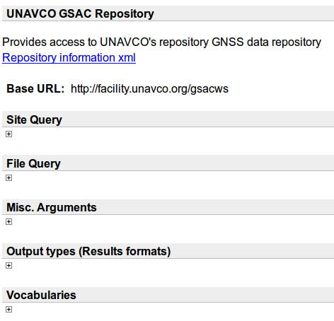
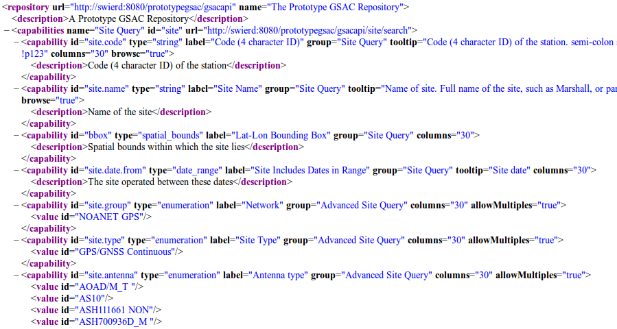
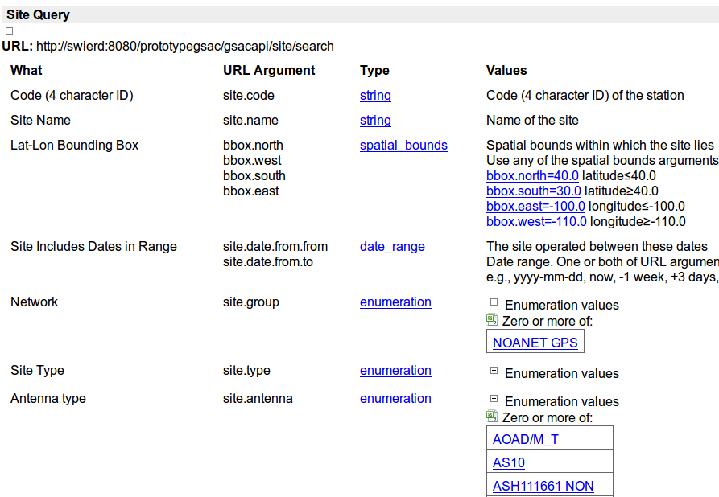
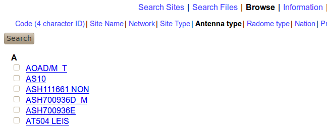

| Previous | Next |
The Information page (from that link on top of every GSAC web page) has information needed to access a repository via the GSAC server. The page looks like this example from the UNAVCO GSAC:

The Base URL is the first part of a URL for this particular GSAC-enabled repository. For example the UNAVCO GSAC repository has base URL http://www.unavco.org/gsacwss. You use the base URL in composing queries to the web page, and command line queries as described in section 4.
The link Repository information xml shows a collection of capabilities for this particular server. These are something like a WSDL (Web Services Description Language) document, an XML formatted file for describing network services, but not a true WSDL. See more details below.
This XML file lists "capabilites" of its GSAC server, which are named parameters that can be used to query GSAC. The "site." values after each "capability id=" gives the names used in queries to this GSAC using HTTP (RESTful) queries, with command line commands, with the GSAC client program, and from Federated GSAC servers.
Some examples of capabilities in a standard GSAC are
<capability id="site.name" type="string" label="Site Name"
<capability id="site.code" type="string" label="Code (4 character ID)"
<capability id="bbox" type="spatial_bounds" label="Lat-Lon Bounding Box"
<capability id="site.date.from" type="date_range" label="Site Includes Dates in Range"
<capability id="site.group" type="enumeration" label="Network"
<capability id="site.type" type="enumeration" label="Site Type"
<capability id="site.antenna" type="enumeration" label="Antenna type"
<capability id="site.dome" type="enumeration" label="Radome type"
<capability id="file.type" type="enumeration" label="File Type"
These should be the same in all standard GSACs, so that interactions with all GSACs are consistent.
On the Information page, the link Repository information xml begins like:

In a row like
<capability id="site.state" type="enumeration" label="State" group="Advanced Site Query" columns="30" allowMultiples="true">
the value of the 'capability id' in the Repository information xml are GSAC's internal names for API parameters, and many names are (usually) common to all standard GSAC repositories. These are also listed as the "URL argument" in the Information page sections Site Query, File Query, Misc. Arguments, and Output Types described just below. The Repository information xml also shows supplied (or meaningful) values for enumerated types of data in the database, such as the 'capability id=site.antenna' name values in the XML file above. You can search for any value of a capability; if the archive has no such data, then no results will be found. The enumerated values such as "AS10" show values where there are holdings in the archive.
You can see a complete Repository information xml page at any online GSAC, in the Information page.
The information available under Information page sections Site Query, File Query, Misc. Arguments, and Output types (Results formats) is more suitable for human use.
Note that GSAC does not read data files or product files to find metadata about data files or product files. GSAC reads from a database with information about data files and product files. This design approach allows GSAC to be very generalized: GSAC does not need to know anything about the data files or product files it offers for download, such as knowing how to read some type of file.
It is the responsibility of the GSAC operator to ensure that the information available to GSAC, in the database, is correct.
The sections Site Query, File Query, Misc. Arguments, and Output Types show the API parameter names ('URL argument'), value types ('Type'), the meaning of each parameter ('What'), and details of possible values ('Values') that you can use to query on in a GSAC implementation. Here is part of a Site Query section:

See section 4, the API, below for how this is used.
Similarly, the parameters in the Information sections File Query, Misc. Arguments, and Output Types are used in the GSAC API. Here are complete examples of Misc. Arguments, and Output Types sections:
The 'limit' parameter in Misc Arguments is useful when exploring a GSAC repository with the web forms, to avoid long tables of results, and to limit how many files to download from one file search.
The Output Types (Results formats) shows the many formats of results available from GSAC from searches about sites, and from file searches to retrieve instrumental data files and product files.
Each GSAC web page has a Help link which shows how to use a GSAC repository. The Help pages' contents are derived from and similar to this user guide.
Each GSAC web page has a Browse link which lets you find sites with a single parameter value:

| Previous | Next |